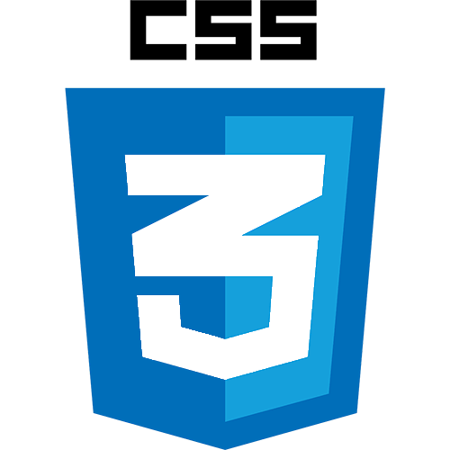
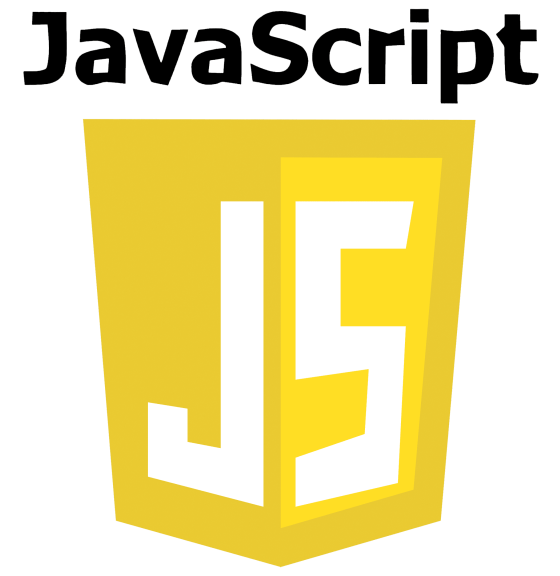
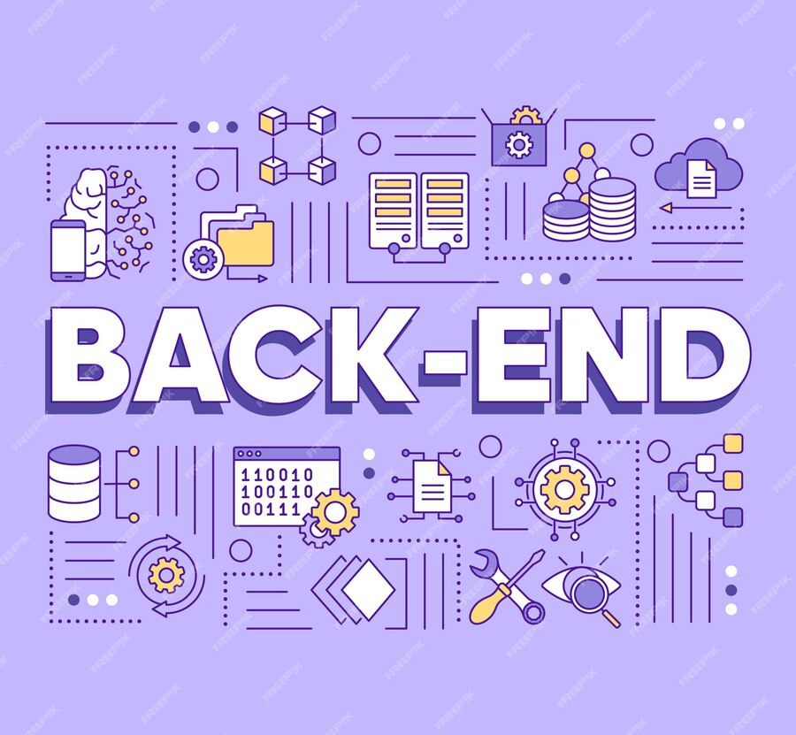

-
HTML

Descrição
HTML é uma linguagem de marcação utilizada na construção de páginas na Web. Documentos HTML podem ser interpretados por navegadores. A tecnologia é fruto da junção entre os padrões HyTime e SGML. HyTime é um padrão para a representação estruturada de hipermídia e conteúdo baseado em tempo.
-
CSS
Descrição
Cascading Style Sheets é um mecanismo para adicionar estilos a uma página web, aplicado diretamente nas tags HTML ou ficar contido dentro das tags style. Também é possível, adicionar estilos adicionando um link para um arquivo CSS que contém os estilos.
-
JavaScript
Descrição
Uma jovem desenvolvedora em treinamento, Jubiléia já se destaca por sua peculiaridade: uma aversão declarada a temas claros em ambientes de programação. Ela tem uma preferência intensa por temas escuros, que considera mais suaves e agradáveis para seus olhos, especialmente durante longas sessões de codificação à noite.
-
React

Descrição
O React é uma biblioteca front-end JavaScript de código aberto com foco em criar interfaces de usuário em páginas web.
-
TypeScript

Descrição
TypeScript é uma linguagem de programação de código aberto desenvolvida pela Microsoft. É um superconjunto sintático estrito de JavaScript e adiciona tipagem estática opcional à linguagem.
-
Back-end
Descrição
O backend é a estrutura que possibilita a operação do sistema, enquanto o front-end é responsável pela parte visual, como apresentação, design, linguagens, cores, entre outros. Mesmo tendo papéis diferentes, essas aplicações estão ligadas intimamente para que os ambientes eletrônicos operem em sincronia.